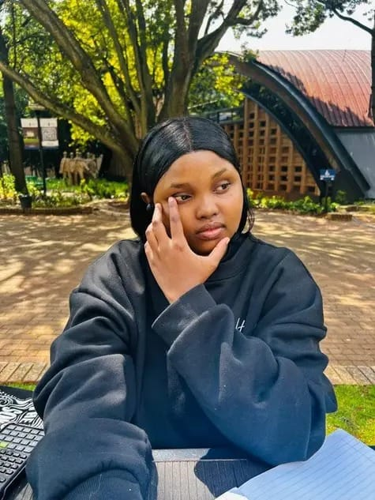

Bsc Computer Sciences
University of The Witwatersrand
Promaths Alumna
Analytical and code-driven Computer Science student at Wits with a foundation in front-end development and a growing passion for backend logic, APIs, and system architecture. My technical journey began with building websites through the Promaths Codecamp, but my curiosity now lies in what happens under the hood—databases, server-side processing, and scalable application design. I am seeking a developer role where I can write clean, efficient code that powers robust digital solutions.
Right now, I’m expanding my technical toolkit beyond web development into backend systems, API design, and database architecture. Building on the strong foundation I gained through the WITS PROMATHS Codecamp (HTML, CSS, JavaScript), I’m now developing projects that mirror real-world software challenges—from designing intuitive user interfaces to structuring scalable server-side logic. I’m particularly interested in how software can automate processes, improve user experiences, and handle complex data flows.
My goal is to become a versatile Software Developer who can own a product from concept to deployment. I want to build applications that are not only technically sound but also solve genuine user and business problems, whether that’s streamlining workflows, enhancing digital experiences, or creating tools that empower decision-making. I’m committed to writing maintainable code, learning modern frameworks, and collaborating on projects that have real-world impact.
I'm proud to be a Promaths Alumnus, having completed the intensive web development program where I gained hands-on experience in building modern, responsive websites and applications. That experience sparked my love for development and gave me the practical skills to start building immediately.
I enjoy diving into system architecture, exploring new frameworks, and solving algorithmic problems that sharpen my logical thinking. I’m fascinated by how software can evolve to meet future demands—from cloud-native apps to AI-integrated tools. Outside of coding, I stay curious by reading tech blogs, contributing to open-source projects, and working on side projects that push me to learn something new with every commit.
Participated in web development bootcamp learning HTML, CSS, and JavaScript.
Completed multiple projects and assignments.
Degree: Bachelor of Science in Computer Science
Currently studying programming, algorithms, and web development. Learning to build websites and solve complex problems.
Program: Web Development Intensive Training
Duration: December 2025
Learned HTML, CSS, JavaScript, and how to build websites. Gained practical experience in web development and project building.
Personal: ncopantsi@gmail.com
Academic: 2995258@students.wits.ac.za
063 767 2806
Johannesburg, South Africa